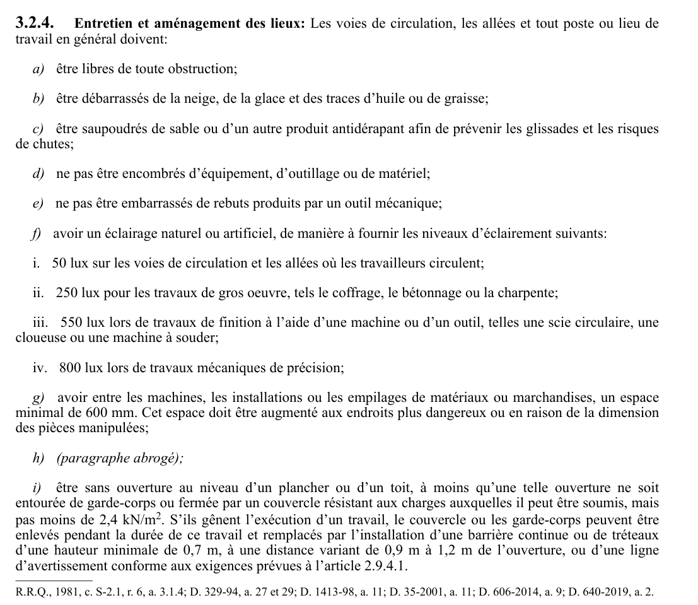

art-3.2.4-CSTC : entretien et aménagement des lieux
Entretien et aménagement des lieux: Les voies de circulation, les allées et tout poste ou lieu de travail en général doivent: a) être libres de toute obstruction; b) être débarrassés de la neige, de la glace et des traces d'huile ou de graisse;
🌐 LegisQuébec · 📄 PDF officiel
Texte officiel
Entretien et aménagement des lieux: Les voies de circulation, les allées et tout poste ou lieu de travail en général doivent:
a) être libres de toute obstruction;
b) être débarrassés de la neige, de la glace et des traces d’huile ou de graisse;
c) être saupoudrés de sable ou d’un autre produit antidérapant afin de prévenir les glissades et les risques de chutes;
d) ne pas être encombrés d’équipement, d’outillage ou de matériel;
e) ne pas être embarrassés de rebuts produits par un outil mécanique;
f) avoir un éclairage naturel ou artificiel, de manière à fournir les niveaux d’éclairement suivants:
i. 50 lux sur les voies de circulation et les allées où les travailleurs circulent;
ii. 250 lux pour les travaux de gros oeuvre, tels le coffrage, le bétonnage ou la charpente;
iii. 550 lux lors de travaux de finition à l’aide d’une machine ou d’un outil, telles une scie circulaire, une cloueuse ou une machine à souder;
iv. 800 lux lors de travaux mécaniques de précision;
g) avoir entre les machines, les installations ou les empilages de matériaux ou marchandises, un espace minimal de 600 mm. Cet espace doit être augmenté aux endroits plus dangereux ou en raison de la dimension des pièces manipulées;
h) (paragraphe abrogé);
i) être sans ouverture au niveau d’un plancher ou d’un toit, à moins qu’une telle ouverture ne soit entourée de garde-corps ou fermée par un couvercle résistant aux charges auxquelles il peut être soumis, mais pas moins de 2,4 kN/m . S’ils gênent l’exécution d’un travail, le couvercle ou les garde-corps peuvent être enlevés pendant la durée de ce travail et remplacés par l’installation d’une barrière continue ou de tréteaux d’une hauteur minimale de 0,7 m, à une distance variant de 0,9 m à 1,2 m de l’ouverture, ou d’une ligne d’avertissement conforme aux exigences prévues à l’article 2.9.4.1.
Texte de l’article 3.2.4 CSTC, extrait de la couche texte du PDF officiel (page 52), sans OCR ni retouche. La capture ci-dessous et le PDF font foi.
{kind=link}

Toucher l'image pour l'agrandir🔗 CSTC.pdf : page 52 · texte à jour au 30 novembre 2024
📚 Source légale : R.R.Q., 1981, c. S-2.1, r. 6, a. 3.1.4; D. 329-94, a. 27 · LégisQuébec
Voir aussi
- art. 3.2.3
- art. 3.2.5
- ⚖️ Loi habilitante : LSST
- ↑ Section 3 : Chantiers de construction
Pages qui pointent ici (3)
- art-3.2.3-CSTC : clous et autres pièces en saillie Recueil législatif
- art-3.2.5-CSTC : signaux de danger Recueil législatif
- CSTC : Section 3 : Chantiers de construction Recueil législatif